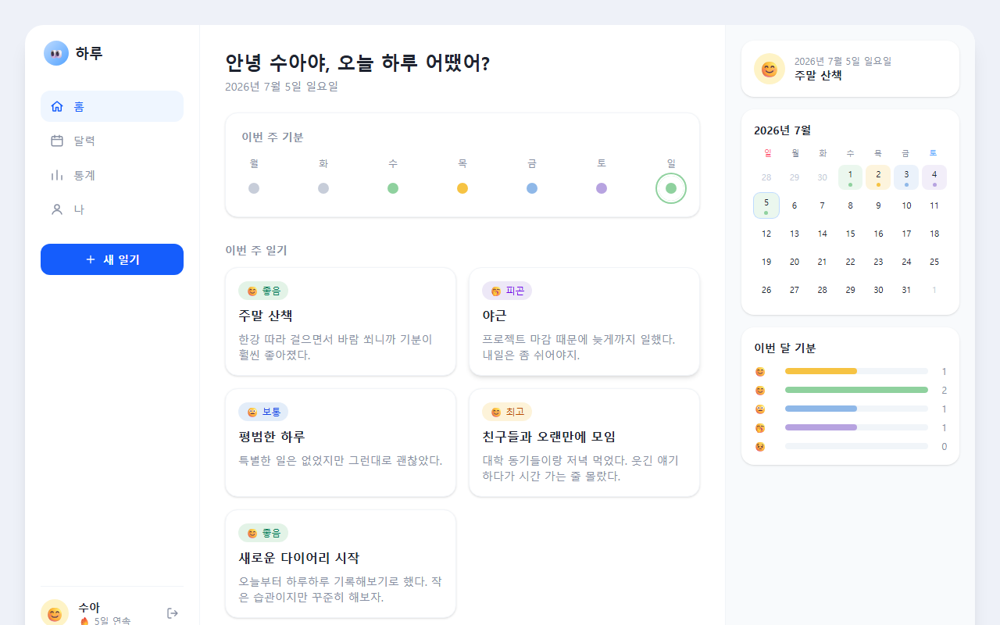

치지직 팔로워 카운터
방송 화면용 실시간 카운터 · 2026.09
동기방송 중 팔로워 증가를 시청자에게 실시간으로 보여 주는 화면 오버레이의 필요
구현5초 간격 폴링, 방송 시작 시점 대비 증가분 계산, 브라우저 CORS 제한을 Cloudflare Worker 프록시로 우회
방송 화면OBS 소스
5초마다
CORS 프록시CF Worker
치지직채널 API
풀스택 웹 개발자
시스템 엔지니어 · OpenStack 장애 대응, 유지관리
MSP 구축팀
구조에서 흰 칸은 직접 만든 부분, 점선은 외부 서비스
웹과 폰에서 같이 쓰는 기분 일기 · 2026.07


구조
동기
개인 기록 습관을 웹과 모바일 어디서든 이어 갈 수 있는 서비스. 기획부터 공개 전 점검까지 풀스택 전 과정을 직접 수행하는 것이 목표
구현
Express REST API와 SQLite 스키마 설계, React 웹·Expo 앱 개발, 이메일 인증과 Google OAuth 로그인 구현, 공개 전 보안 점검
트러블슈팅
웹(쿠키 세션)과 앱(토큰)의 인증 방식 차이. 단일 API에서 두 방식을 모두 검증하도록 인증 계층을 통합
스트리머 방송 일정을 내 캘린더로 · 2026.04

구조
동기
채널마다 흩어진 방송 일정을 한곳에서 확인하기 어려운 문제. 표준 캘린더 형식(.ics)으로 제공해 기존 캘린더 앱에서 바로 구독하도록 설계
구현
Next.js 단일 구조를 React 프런트엔드·Express API·MySQL로 분리, JWT 인증, 스트리머별 .ics 구독 피드와 팔로우 기능 구현
트러블슈팅
MySQL DATE 값이 시간대 변환을 거치며 하루씩 밀리는 문제. DB 연결 설정에서 날짜 컬럼을 문자열로 받도록 변경해 해결
인터넷 없이 도는 내 PC 상태판 · 2026.06

구조
동기
인터넷이 없는 환경에서도 PC 자원 상태를 실시간으로 확인하고 기록을 남기는 로컬 모니터링 도구의 필요
구현
psutil·NVML 기반 1초 간격 수집, 1분 평균 7일 보관, 기간별 차트와 CSV 내보내기, exe 패키징과 시스템 트레이 실행
트러블슈팅
외부 네트워크가 없는 환경에서의 동작 보장. 차트 라이브러리와 아이콘까지 모든 정적 자원을 로컬에서 서빙하도록 구성
아는 사람만 들어오는 팬 창작 소설 서재 · 2026.09

구조
동기
흩어진 팬 창작 소설을 한곳에서 읽는 비공개 서재. 가입 절차 없이 지정된 사람만 접근하도록 입장 질문 방식 채택
구현
React 서재·리더 화면, Supabase 스키마와 RLS 정책 설계, 읽기 진도·책갈피·댓글 기능, GitHub Actions 배포와 커스텀 도메인 연결
트러블슈팅
회원 가입 없이 댓글 작성자를 구분해야 하는 문제. 익명 세션마다 고정 작성자 번호를 부여해 해결
방송 화면용 실시간 카운터 · 2026.09
동기방송 중 팔로워 증가를 시청자에게 실시간으로 보여 주는 화면 오버레이의 필요
구현5초 간격 폴링, 방송 시작 시점 대비 증가분 계산, 브라우저 CORS 제한을 Cloudflare Worker 프록시로 우회
디스코드 유튜브 요약 봇 · 2026.09 · 운영 중
동기구독 채널의 새 영상을 디스코드 커뮤니티에 요약해 자동으로 알리기 위한 봇
구현봇 개발과 상시 운영, 소개 페이지 제작 (봇 코드는 비공개)
설정을 넣으면 짧은 소설을 · 2026.03
동기입력한 설정을 바탕으로 생성형 AI가 단편 소설을 쓰는 서비스를 서버부터 직접 구현
구현Spring Boot 서버와 Claude API 연동, 입력 화면 개발, DOMPurify·CSP·보안 헤더 적용으로 생성 결과 출력 보호
대화하듯 이어 쓰는 이야기 · 2026.04
동기대화형 AI 도구에서 스트리밍 응답과 API 비용 최적화를 직접 다뤄 보기 위함
구현TypeScript 서버 개발, SSE 기반 스트리밍 응답, 프롬프트 캐싱 적용으로 긴 대화의 API 비용 절감
2026.08 – 현재
MSP 구축팀
2026.02 – 2026.07
2024.07 – 2026.01
시스템 엔지니어
2025.02 – 2026.01 · 파견
국가정보자원관리원